Plateforme intelligente de gestion et d'analyse des performances footballistiques
Application mobile • API REST • Services IA • Back-office
Mémoire de Projet de Fin d'Études
Présenté pour l'obtention du diplôme de
Licence en Informatique
Je dédie ce travail à mes parents, pour leur amour, leur soutien indéfectible et tous les sacrifices qu'ils ont consentis pour mon éducation et ma réussite. À mes frères et sœurs, pour leur présence et leurs encouragements. À tous ceux qui, de près ou de loin, ont contribué à la réalisation de ce projet.
Au terme de ce projet de fin d'études, je tiens à exprimer ma profonde gratitude à toutes les personnes qui ont contribué, directement ou indirectement, à la réalisation de ce travail.
Je remercie tout particulièrement mon encadrant académique pour son accompagnement, ses conseils et ses remarques qui m'ont permis d'améliorer progressivement la qualité de ce projet.
J'adresse également mes sincères remerciements à mon encadrant professionnel ainsi qu'à l'ensemble de l'équipe pour leur disponibilité, leur confiance et leur soutien tout au long de la réalisation de FootTech.
Je remercie enfin ma famille et mes proches pour leur soutien et leurs encouragements durant toute la période consacrée à ce projet.
Le développement des technologies numériques et de l'intelligence artificielle transforme progressivement les méthodes de gestion et d'analyse dans le domaine sportif. Dans le football, les entraîneurs doivent gérer quotidiennement un grand nombre d'informations relatives aux joueurs, aux entraînements, aux matchs, aux présences, aux performances et à l'évolution des athlètes.
Dans ce contexte, ce projet de fin d'études consiste à concevoir et développer FootTech, une plateforme intelligente dédiée à la gestion des équipes de football et à l'aide à la décision sportive.
La solution proposée repose sur une architecture composée de plusieurs applications et services. Elle comprend une application principale destinée aux entraîneurs, adjoints et joueurs, un backend assurant la gestion des données et des règles métier, des microservices d'intelligence artificielle dédiés à la recommandation de compositions et à l'analyse des performances, ainsi qu'une plateforme d'administration permettant la supervision globale du système.
FootTech permet notamment de gérer les équipes et les joueurs, organiser les saisons et les entraînements, suivre les présences, préparer les matchs, enregistrer les événements en direct, évaluer les performances des joueurs et consulter les bilans saisonniers.
L'intelligence artificielle constitue également une composante importante de la solution. Un service de recommandation analyse la présence, la performance et la fatigue afin de proposer une composition d'équipe. Un second service fournit différentes fonctionnalités d'analyse telles que la détection des tendances de performance, le regroupement des joueurs, l'analyse du ton des commentaires, la transcription vocale et l'extraction d'informations à partir de documents.
Mots-clés : Football, gestion sportive, intelligence artificielle, recommandation, analyse de performance, microservices, Flutter, Node.js, FastAPI, Django, PostgreSQL.
The development of digital technologies and artificial intelligence is progressively transforming sports management and performance analysis. In football, coaches need to manage a large amount of information related to players, training sessions, matches, attendance, performance and player development.
In this context, this final-year project aims to design and develop FootTech, an intelligent platform dedicated to football team management and sports decision support.
The proposed solution is based on a multi-component architecture including a main application for coaches, assistants and players, a backend responsible for business logic and data management, artificial intelligence microservices dedicated to lineup recommendation and performance analysis, and an administration platform for global system supervision.
FootTech provides features for managing teams and players, organizing seasons and training sessions, monitoring attendance, preparing matches, recording live match events, evaluating player performance and analyzing season statistics.
Artificial intelligence is an important component of the platform. A recommendation service analyzes factors such as attendance, performance and fatigue to generate lineup recommendations. Another AI service provides performance trend detection, player clustering, comment tone analysis, speech transcription and document information extraction.
The objective of this project is therefore to centralize football-related information within a single platform and provide coaches with analytical and decision-support tools while keeping the final sporting decision under their control.
Keywords: Football, sports management, artificial intelligence, recommendation, performance analysis, microservices, Flutter, Node.js, FastAPI, Django, PostgreSQL.
Introduction générale
Chapitre 1 — Contexte général et étude préalable
Chapitre 2 — Analyse et spécification des besoins
Chapitre 3 — Conception de la solution
Chapitre 4 — Choix technologiques
Chapitre 5 — Réalisation et implémentation
Chapitre 6 — Tests et validation
Chapitre 7 — Résultats, limites et perspectives
Conclusion générale
Bibliographie
Annexes
| Fig. | Description | Chapitre |
|---|---|---|
| 1 | Architecture globale de FootTech | Introduction |
| 2 | Diagramme de cas d'utilisation global | 3.4 |
| 3 | Diagramme de cas d'utilisation côté encadrement | 3.4 |
| 4 | Diagramme de cas d'utilisation côté joueur | 3.4 |
| 5 | Séquence d'authentification | 3.5 |
| 6 | Séquence de gestion d'un entraînement | 3.5 |
| 7 | Séquence de gestion d'un match | 3.5 |
| 8 | Séquence des notifications | 3.5 |
| 9 | Diagramme d'activité — séance d'entraînement | 3.6 |
| 10 | Diagramme de classes du domaine métier | 3.7 |
| 11 | Diagramme de classes du backend Express | 3.7 |
| 12 | Modèle conceptuel de données (ER) | 3.8 |
| 13 | Diagramme de flux de données | 3.9 |
| 14 | Architecture globale du système | 3.1 |
| 15 | Architecture logicielle en couches | 3.2 |
| 16 | Architecture Riverpod (Flutter) | 5.3 |
| 17 | Communication entre microservices | 3.3 |
| 18 | Composants frontend | 5.3 |
| 19 | Module admin Django | 5.11 |
| 20 | Déploiement Docker | 5.13 |
| 21 | Pipeline CI/CD | 5.14 |
| Tab. | Description | Chapitre |
|---|---|---|
| 1A | Profil des trois solutions étudiées | 1.3 |
| 1B | Comparaison détaillée FootTech / TacticalPad / MyCoachSport | 1.3 |
| 1C | Analyse stratégique et positionnement de FootTech | 1.3 |
| 2 | Objectifs SMART | 1.6 |
| 3 | Comparaison des méthodologies | 1.7 |
| 4 | Planning prévisionnel du projet | 1.7 |
| 5 | Découpage des sprints | 1.7 |
| 6 | Épopées et User Stories | 2.2 |
| 7 | Choix technologiques — Frontend | 4.1 |
| 8 | Choix technologiques — Backend | 4.2 |
| 9 | Choix technologiques — Services IA | 4.3 |
| 10 | Description des cas d'utilisation | 3.4 |
| 11 | Tables PostgreSQL (schéma platform) | 3.8 |
| 12 | Endpoints API Express | 5.2 |
| 13 | Tests fonctionnels | 6.2 |
| 14 | Résultats des tests | 6.9 |
| 15 | Feuille de route fonctionnelle et industrielle | 7.6 |
Le football moderne est devenu un domaine dans lequel la donnée occupe une place de plus en plus importante. La gestion d'une équipe ne se limite plus à la préparation des entraînements et à l'organisation des matchs. Les entraîneurs doivent également suivre l'assiduité des joueurs, leurs performances individuelles, leur temps de jeu, leur évolution, leur état physique ainsi que de nombreux événements survenant pendant les rencontres.
Dans une organisation traditionnelle, ces informations peuvent être dispersées entre des fichiers, des documents, des applications de messagerie et des outils différents. Cette dispersion rend leur exploitation plus difficile et peut limiter la capacité de l'entraîneur à disposer rapidement d'une vision globale de son équipe.
Par ailleurs, l'intelligence artificielle offre aujourd'hui de nouvelles possibilités dans le domaine de l'analyse sportive. Les techniques de traitement des données peuvent être utilisées afin d'identifier des tendances, regrouper des profils similaires ou encore fournir des recommandations destinées à assister les professionnels dans leurs prises de décision.
C'est dans ce contexte que s'inscrit le projet FootTech. L'objectif est de concevoir une plateforme centralisée permettant aux différents acteurs d'une équipe de football de gérer leurs activités sportives tout en bénéficiant de fonctionnalités intelligentes. La plateforme distingue principalement plusieurs profils : le coach, l'adjoint, le joueur et l'administrateur.
La solution est organisée autour d'un backend principal, d'une application cliente, de microservices dédiés à l'intelligence artificielle et d'une plateforme d'administration. Cette architecture permet de séparer les responsabilités et de faire évoluer indépendamment les différents composants.
La gestion d'une équipe de football implique la manipulation quotidienne de nombreuses informations. Les données relatives aux joueurs, aux entraînements, aux présences, aux matchs et aux performances peuvent être difficiles à exploiter lorsqu'elles sont stockées dans différents supports. Cette situation pose plusieurs problèmes :
La problématique principale peut être formulée ainsi :
Comment concevoir une plateforme centralisée permettant de gérer efficacement une équipe de football tout en exploitant l'intelligence artificielle afin d'améliorer l'analyse et l'aide à la décision sportive ?
Objectif général : Développer une plateforme intelligente permettant de centraliser la gestion sportive et administrative d'une équipe de football.
Objectifs spécifiques :
L'un des points forts de FootTech est la séparation des responsabilités :
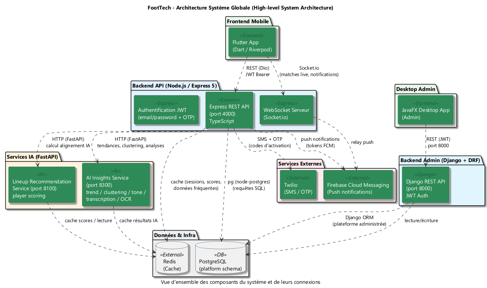
FootTech est une plateforme logicielle destinée à accompagner la gestion quotidienne d'une équipe de football. Elle centralise plusieurs domaines :
La solution est donc plus qu'une simple application de gestion : elle constitue un système d'information sportif complet.
La gestion d'une équipe de football implique la manipulation quotidienne de nombreuses informations. Les données relatives aux joueurs, aux entraînements, aux présences, aux matchs et aux performances peuvent être difficiles à exploiter lorsqu'elles sont stockées dans différents supports.
Cette situation pose plusieurs problèmes :
La problématique principale : Comment concevoir une plateforme centralisée permettant de gérer efficacement une équipe de football tout en exploitant l'intelligence artificielle afin d'améliorer l'analyse et l'aide à la décision sportive ?
L'étude de l'existant a été recentrée sur les deux références expressément retenues pour ce projet : TacticalPad et MyCoachSport. L'analyse repose sur les pages publiques officielles accessibles le 2 septembre 2026, les écrans de connexion visibles sans compte et l'inspection fonctionnelle du code de FootTech. Elle ne prétend donc pas décrire des modules privés qui nécessitent un abonnement ou des identifiants. Lorsqu'une fonction n'est pas présentée publiquement, elle est notée « non établie publiquement » plutôt que « inexistante ».
Les critères ont été choisis selon quatre axes : (1) gestion organisationnelle, (2) préparation sportive et tactique, (3) analyse et aide à la décision, (4) architecture, sécurité et exploitation. Cette méthode évite une comparaison limitée à l'apparence des interfaces et met en évidence la valeur métier réelle de chaque produit.
| Solution | Positionnement principal | Public cible | Éléments différenciateurs visibles |
|---|---|---|---|
| FootTech | Système d'information footballistique intégré et aide à la décision | Clubs, coachs, adjoints, joueurs et administrateurs | Cycle complet équipe–saison–entraînement–match, temps réel, dossiers joueurs détaillés, microservices IA et back-office. |
| TacticalPad | Tableau tactique et création de contenus d'entraînement | Entraîneurs, analystes, éducateurs et staffs de plusieurs sports | Éditeur visuel, animation 2D/3D, nombreux terrains, export et partage de contenus, applications desktop et mobiles. |
| MyCoachSport | Organisation opérationnelle d'un effectif et de la saison | Éducateurs, clubs et joueurs | Effectif, convocations, calendrier, présences, compositions, séances et bibliothèque communautaire d'exercices. |
TacticalPad se présente comme une application destinée à dessiner des exercices, des compositions et des tactiques. Son avantage principal est la richesse de la représentation visuelle : création de séances, tableaux animés, visualisation 2D et 3D, terrains personnalisables et prise en charge de plusieurs sports. La page officielle indique une disponibilité sur Windows, macOS, iOS et Android. Les tutoriels officiels présentent également l'export d'images, de vidéos et de documents PDF, des formats adaptés aux réseaux sociaux, l'analyse sur photo ainsi que l'utilisation de dépôts cloud tels que Google Drive, OneDrive et Dropbox.
TacticalPad possède donc une forte maturité pour la communication tactique. Le coach peut transformer une idée en support visuel compréhensible, l'animer et la partager. En revanche, les pages publiques étudiées ne décrivent pas un système d'information complet équivalent à FootTech pour les dossiers administratifs et médicaux des joueurs, la gestion des tuteurs et de la scolarité, le suivi live structuré des événements de match, l'administration multi-rôle ou la recommandation de composition fondée sur la présence, la performance et la fatigue.
Au moment de la consultation, la page publique affichait des offres annuelles distinctes : formule complète desktop et mobile, formule PC/Mac, formule mobile et licences en volume. Ces prix sont des informations commerciales susceptibles d'évoluer et sont donc conservés uniquement comme observation datée, pas comme caractéristique permanente.
L'adresse classic.mycoachsport.com/login donne accès à une interface d'authentification (identifiant, mot de passe, récupération de mot de passe et inscription). Sans compte, le contenu privé n'est pas consultable. Pour compléter l'étude de façon vérifiable, les fonctionnalités ont été relevées sur la page publique officielle historique de MyCoach Football, appartenant au même écosystème produit.
Cette documentation met en avant un parcours très proche du quotidien d'un éducateur : gestion des informations personnelles et médicales, convocations différenciées par courriel ou SMS, calendrier de saison, matchs et entraînements, choix des joueurs, composition tactique, suivi de la présence et préparation des séances. Elle présente aussi des fiches d'exercices illustrées partageables avec une communauté, une bibliothèque publique annoncée à plus de mille exercices et un mécanisme de proposition de séance selon la catégorie, la durée et l'intensité.
MyCoachSport constitue ainsi un concurrent fonctionnel plus proche de FootTech que TacticalPad sur l'organisation de l'équipe. Ses atouts publics sont la logique métier éprouvée du coach, la communication des convocations et la mutualisation d'exercices. Les pages accessibles publiquement ne permettent toutefois pas d'établir la présence d'un moteur comparable aux deux microservices IA de FootTech, d'un suivi temps réel par Socket.IO, d'une API auto-hébergeable documentée ou d'un back-office technique séparé. Le prix de la plateforme classique n'est pas affiché sur la page de connexion étudiée.
| Critère | FootTech | TacticalPad | MyCoachSport / MyCoach Football |
|---|---|---|---|
| Finalité principale | Gestion intégrée + décision | Conception tactique visuelle | Gestion quotidienne du coach |
| Sports couverts | Football | Multisport | Football sur la source fonctionnelle étudiée ; vitrine actuelle multisport |
| Plateformes clientes | Flutter mobile, web et desktop | Windows, macOS, iOS, Android | Plateforme web ; applications évoquées par l'écosystème public |
| Gestion des équipes et du staff | Oui, rôles COACH/ADJOINT/JOUEUR | Gestion d'équipes orientée dessin | Oui |
| Dossier joueur enrichi | Identité, tuteur, adresse, école, blessure, profil saison | Non établie publiquement | Informations personnelles et médicales |
| Isolation multi-équipe / saison | Oui, ressources rattachées à l'équipe | Plusieurs équipes configurables | Calendrier et saison présentés publiquement |
| Planification entraînements et matchs | Oui | Planification de séances | Oui |
| Présences | Oui, saisie individuelle et atomique en lot | Non établie publiquement | Oui, compteur en direct annoncé |
| Fiches et bibliothèque d'exercices | Fiches, situations et propositions rattachées à l'équipe | Création visuelle avancée | Bibliothèque communautaire importante |
| Éditeur tactique | Dessins tactiques structurés | Fonction centrale et mature | Composition tactique |
| Animation 2D/3D | Non | Oui | Non établie publiquement |
| Partage / export média | Rapport de match PDF et notifications | Images, vidéos, PDF, cloud et réseaux sociaux | Partage de séances et convocations |
| Cycle complet du match | Pré-match, live, post-match | Préparation tactique | Matchs, sélection et composition |
| Événements en temps réel | Buts, cartons, changements et blessures via Socket.IO | Non établi publiquement | Non établi publiquement |
| Statistiques et évaluations | Statistiques, évaluations, tendances | Orientation analyse et présentation tactiques | Suivi joueur présenté, profondeur non visible sans compte |
| Recommandation de composition par IA | Oui, présence + performance + fatigue | Non présentée publiquement | Non présentée publiquement |
| Analyses IA complémentaires | Tendance, clustering, ton, transcription et OCR | Non présentées publiquement | Proposition de séance selon des critères ; méthode non détaillée |
| Communication | FCM, notifications internes et OTP SMS | Supports visuels et exports | Courriel/SMS et convocations |
| Administration globale | Django/DRF + client JavaFX + audit | Licences en volume ; back-office non étudié | Fonctions privées non visibles |
| Contrôle de l'hébergement | Architecture conteneurisée auto-hébergeable | Produit propriétaire | Service propriétaire |
| Maturité commerciale | Prototype PFE validé techniquement | Produit international établi | Écosystème métier établi |
FootTech ne doit pas être présenté comme supérieur sur tous les axes. Il se distingue surtout par l'intégration de fonctions qui sont spécialisées chez les concurrents. TacticalPad reste plus avancé pour créer et animer des supports tactiques ; MyCoachSport dispose d'une logique communautaire et organisationnelle plus mature. FootTech apporte, dans une seule architecture maîtrisée, les dossiers joueurs, l'isolation par équipe, les entraînements, les présences, le cycle de match, le temps réel, les statistiques, l'administration et deux services d'aide à la décision.
| Forces | Faiblesses | Opportunités | Menaces |
|---|---|---|---|
| Architecture modulaire ; couverture métier de bout en bout ; rôles séparés ; données jeunesse détaillées ; suivi live ; IA explicable ; auto-hébergement possible. | Pas d'animation tactique 3D ; bibliothèque d'exercices limitée ; expérience terrain encore courte ; dépendance à la qualité des données et à des services externes. | Importer/exporter des séances ; créer une communauté d'exercices ; mode hors ligne ; analyse vidéo ; pilotes avec académies et clubs formateurs. | Concurrents installés ; coût d'industrialisation ; exigences de protection des données des mineurs ; adoption difficile si la saisie est trop lourde. |
Le positionnement recommandé est celui d'une plateforme footballistique intelligente pour académies et clubs de formation. FootTech doit préserver son avantage d'intégration tout en empruntant deux bonnes pratiques aux références : la puissance de création visuelle de TacticalPad et la simplicité opérationnelle ainsi que la bibliothèque partagée de MyCoachSport.
Les solutions existantes souffrent de plusieurs limites :
FootTech se positionne sur ce créneau : une plateforme modulaire, mobile d'abord, multi-acteurs, qui combine :
Le rôle de l'IA est celui d'un outil d'aide à la décision, et non d'un remplacement de l'entraîneur. Les recommandations générées assistent le coach tout en conservant la décision finale sous sa responsabilité.
| Critère | Objectif du projet |
|---|---|
| Spécifique | Concevoir et déployer une plateforme de gestion de club regroupant mobile, API, IA et back-office. |
| Mesurable | Fournir au moins 15 fonctionnalités métier couvrant effectif, entraînements, matchs et notifications. |
| Atteignable | Réaliser avec des technologies maîtrisées (Flutter, Node.js, Python) sur une durée de 4 mois. |
| Réaliste | S'appuyer sur des microservices rapides à déployer (Docker) et une architecture modulaire. |
| Temporel | Livrer une version utilisable (démo) en fin de projet, avec pipeline CI/CD fonctionnel. |
| Critère | Cycle en cascade (V) | Scrum | Kanban | Choix retenu |
|---|---|---|---|---|
| Adaptation aux changements | Faible | Forte | Forte | Scrum : itérations courtes de 2 semaines permettant d'ajuster le périmètre au fil des sprints et de livrer tôt les modules critiques (auth, effectif, entraînements). |
| Cadence de livraison | En fin de cycle | Fin de chaque sprint | Continue | |
| Gestion des priorités | Figée | Backlog priorisé | Column Kanban | |
| Rôles définis | Non | PO / Scrum Master / Équipe | Non | |
| Retour utilisateur | Tardif | Régulier | Continue |
| Sprint | Objectif (thème) | Livrables clés |
|---|---|---|
| Sprint 1 | Fondations | Analyse du besoin, monorepo, base PostgreSQL (32 tables), API Express (auth JWT + refresh + OTP SMS). |
| Sprint 2 | Effectif | Modules équipes / joueurs (fiches, tuteurs, scolarité, blessures), saisons, modélisation UML. |
| Sprint 3 | Entraînements | Planification, présences (bulk), situations et schémas tactiques, propositions d'exercices. |
| Sprint 4 | Matchs | Cycle de match complet, suivi live Socket.IO, évaluations, rapport PDF, écrans Flutter. |
| Sprint 5 | Intelligence | Lineup Service (scoring + seuils), AI Insights, recommandations persistées. |
| Sprint 6 | Exploitation | Notifications (FCM + Twilio), back-office Django, client JavaFX, Docker, CI/CD. |
| Sprint 7 | Validation | Tests (Postman, Playwright, JMeter), recette, corrections. |
| Sprint 8 | Finalisation | Rédaction du mémoire, préparation de la soutenance. |
Le système distingue quatre profils d'utilisateurs :
Le coach représente l'acteur principal. Il peut :
L'adjoint assiste le coach dans les opérations quotidiennes :
Le joueur accède à ses propres informations :
L'administrateur supervise l'ensemble de la plateforme :
Les besoins ont été regroupés en 15 épopées et 74 User Stories :
| # | Épopée | Nombre |
|---|---|---|
| 1 | Authentification | 6 |
| 2 | Équipes | 4 |
| 3 | Joueurs | 6 |
| 4 | Saisons | 3 |
| 5 | Entraînements | 7 |
| 6 | Présences | 4 |
| 7 | Matchs | 3 |
| 8 | IA Composition | 4 |
| 9 | Match Live | 5 |
| 10 | Statistiques | 4 |
| 11 | Bilan saison | 3 |
| 12 | Notifications / Calendrier | 5 |
| 13 | AI Insights | 5 |
| 14 | Administration | 11 |
| 15 | Dashboards | 4 |
| Total | 74 | |
| ID | User Story |
|---|---|
| US-01 | En tant que Coach, je veux m'inscrire avec email et mot de passe pour créer mon compte. |
| US-02 | En tant que Coach/Adjoint, je veux me connecter avec email + mot de passe pour accéder à l'application. |
| US-03 | En tant qu'utilisateur, je veux que ma session soit automatiquement renouvelée grâce au refresh token. |
| US-04 | En tant que Coach, je veux activer un Joueur par code OTP (SMS/WhatsApp). |
| US-05 | En tant que Joueur, je veux me connecter par numéro de téléphone + OTP. |
| US-06 | En tant qu'utilisateur, je veux me déconnecter. |
| ID | User Story |
|---|---|
| US-07 | En tant que Coach, je veux créer une équipe (nom, catégorie, logo, description). |
| US-08 | En tant que Coach, je veux lister mes équipes. |
| US-09 | En tant que Coach, je veux ajouter un Adjoint à mon équipe. |
| US-10 | En tant que Coach, je veux supprimer un Adjoint de mon équipe. |
| ID | User Story |
|---|---|
| US-11 | En tant que Coach, je veux ajouter un joueur à mon équipe (activation par OTP). |
| US-12 | En tant que Coach, je veux consulter la fiche complète d'un joueur. |
| US-13 | En tant que Coach, je veux modifier les informations d'un joueur. |
| US-14 | En tant que Coach, je veux ajouter les informations de scolarité d'un joueur. |
| US-15 | En tant que Coach, je veux enregistrer les blessures d'un joueur. |
| US-16 | En tant que Coach, je veux consulter le profil saisonnier d'un joueur (évolution morphologique et sportive). |
| ID | User Story |
|---|---|
| US-17 | En tant que Coach, je veux créer une saison (nom, dates, is_current). |
| US-18 | En tant qu'utilisateur, je veux lister les saisons disponibles. |
| US-19 | En tant que Coach, je veux modifier les dates d'une saison. |
| ID | User Story |
|---|---|
| US-20 | En tant que Coach, je veux créer un entraînement (date, heure, lieu). |
| US-21 | En tant que Coach, je veux remplir la fiche de séance (objectifs, effectif). |
| US-22 | En tant que Coach, je veux ajouter des situations d'exercices à la séance. |
| US-23 | En tant que Coach, je veux dessiner un schéma tactique pour une situation. |
| US-24 | En tant qu'Adjoint, je veux proposer un exercice au coach. |
| US-25 | En tant que Coach, je veux valider ou rejeter une proposition d'exercice. |
| US-26 | En tant qu'utilisateur, je veux lister les entraînements de mon équipe. |
| ID | User Story |
|---|---|
| US-27 | En tant qu'Adjoint, je veux marquer la présence d'un joueur à un entraînement. |
| US-28 | En tant qu'Adjoint, je veux marquer les présences en lot (bulk) pour un entraînement. |
| US-29 | En tant qu'utilisateur, je veux consulter les présences d'un entraînement. |
| US-30 | En tant qu'utilisateur, je veux consulter l'historique des présences d'un joueur. |
| ID | User Story |
|---|---|
| US-31 | En tant que Coach, je veux créer un match (adversaire, date, lieu, formation). |
| US-32 | En tant que Coach, je veux définir la composition d'équipe (titulaires, remplaçants). |
| US-33 | En tant que Coach, je veux modifier le statut d'un match (scheduled → live → finished). |
| ID | User Story |
|---|---|
| US-34 | En tant que Coach, je veux obtenir une recommandation IA de composition. |
| US-35 | En tant que Coach, je veux consulter les scores IA d'un match. |
| US-36 | En tant que Coach, je veux valider ou modifier la composition recommandée par l'IA. |
| US-37 | En tant que Coach, je veux que la recommandation IA soit recalculable à tout moment. |
| ID | User Story |
|---|---|
| US-38 | En tant qu'Adjoint, je veux enregistrer les événements live d'un match (buts, cartons, changements). |
| US-39 | En tant qu'utilisateur, je veux consulter la timeline d'un match en cours (temps réel). |
| US-40 | En tant que Coach, je veux saisir les statistiques d'un match (buts, passes, minutes jouées). |
| US-41 | En tant que Coach, je veux évaluer les joueurs après un match (note + commentaire). |
| US-42 | En tant que Coach, je veux générer un rapport de match (PDF). |
| ID | User Story |
|---|---|
| US-43 | En tant qu'utilisateur, je veux consulter mes statistiques personnelles. |
| US-44 | En tant que Coach, je veux consulter les statistiques de mon équipe. |
| US-45 | En tant que Coach, je veux comparer les performances entre joueurs. |
| US-46 | En tant que Coach, je veux consulter l'évolution d'un joueur sur la saison. |
| ID | User Story |
|---|---|
| US-47 | En tant que Coach, je veux consulter le bilan de saison de mon équipe. |
| US-48 | En tant que Coach, je veux exporter le bilan en PDF. |
| US-49 | En tant que Coach, je veux filtrer le bilan par joueur ou par poste. |
| ID | User Story |
|---|---|
| US-50 | En tant qu'utilisateur, je veux recevoir des notifications push (FCM). |
| US-51 | En tant que Coach, je veux envoyer une notification à toute l'équipe (broadcast). |
| US-52 | En tant qu'utilisateur, je veux marquer une notification comme lue. |
| US-53 | En tant qu'utilisateur, je veux consulter le calendrier partagé de mon équipe. |
| US-54 | En tant que Coach, je veux créer un événement dans le calendrier. |
| ID | User Story |
|---|---|
| US-55 | En tant que Coach, je veux détecter la tendance de performance d'un joueur (PROGRESSING / STABLE / DECLINING). |
| US-56 | En tant que Coach, je veux regrouper mes joueurs par profils similaires (clustering). |
| US-57 | En tant que Coach, je veux analyser le ton de mes commentaires d'évaluation (TOO_HARSH / TOO_GENERIC / OK). |
| US-58 | En tant que Coach, je veux transcrire une observation vocale en texte (speech-to-text). |
| US-59 | En tant que Coach, je veux extraire des informations d'un document (certificat médical, fiche scolaire) par OCR. |
| ID | User Story |
|---|---|
| US-60 | En tant qu'Admin, je veux me connecter au back-office (email + mot de passe). |
| US-61 | En tant qu'Admin, je veux consulter le tableau de bord (KPI). |
| US-62 | En tant qu'Admin, je veux lister les équipes avec recherche et filtres. |
| US-63 | En tant qu'Admin, je veux suspendre une équipe. |
| US-64 | En tant qu'Admin, je veux réactiver une équipe suspendue. |
| US-65 | En tant qu'Admin, je veux lister les utilisateurs. |
| US-66 | En tant qu'Admin, je veux suspendre un utilisateur. |
| US-67 | En tant qu'Admin, je veux réactiver un utilisateur. |
| US-68 | En tant qu'Admin, je veux diffuser une notification à tous les utilisateurs (broadcast). |
| US-69 | En tant qu'Admin, je veux consulter les logs d'audit. |
| US-70 | En tant qu'Admin, je veux gérer les comptes administrateurs. |
| ID | User Story |
|---|---|
| US-71 | En tant que Coach, je veux consulter mon dashboard personnel. |
| US-72 | En tant que Joueur, je veux consulter mon dashboard personnel. |
| US-73 | En tant qu'Admin, je veux consulter le dashboard de supervision. |
| US-74 | En tant qu'Admin, je veux voir les joueurs en attente d'activation. |
Cette User Story correspond directement au microservice lineup-recommendation-service. Le principe est particulièrement intéressant dans le mémoire car il montre comment une User Story métier devient une fonctionnalité technique :
User Story (US-34)
↓
Données joueurs (présence, performance, fatigue)
↓
Service IA (Lineup Recommendation Service :8100)
↓
Score des joueurs (0-100)
↓
Composition recommandée (STARTER ≥ 70, SUB ≥ 40)
↓
Coach
↓
Validation / modificationLe rôle de l'IA est celui d'un outil d'aide à la décision, et non d'un remplacement de l'entraîneur.
Les besoins fonctionnels couvrent l'ensemble des 74 User Stories organisées en 15 épopées. Chaque fonctionnalité est traçable de la User Story au code source via le pattern :
User Story → Cas d'utilisation → Conception → Code concerné → Interface → Test → RésultatCette correspondance donne au mémoire un aspect réellement basé sur le projet FootTech plutôt qu'un simple mémoire théorique.
| Catégorie | Besoin | Implémentation |
|---|---|---|
| Sécurité | Authentification sécurisée | JWT (access 30 min / refresh 7 j), OTP SMS, RBAC |
| Sécurité | Protection des données | Bcrypt, Helmet.js, CORS, Zod, secrets absents des logs |
| Confidentialité | Isolation des clubs et équipes | Contrôles resource/team/self-access ; saisons et propositions rattachées à l'équipe |
| Vie privée | Données potentiellement sensibles de joueurs mineurs | Minimisation, droits par rôle et journal d'audit ; consentement et rétention à formaliser avant production |
| Intégrité | Pas d'enregistrement partiel d'un lot | Transaction PostgreSQL pour les présences en lot |
| Performance | Temps de réponse | Redis (cache), pagination, index PostgreSQL, timeout IA 5 s |
| Disponibilité | Dégradation gracieuse | 503 si service IA indisponible ; fallback composition manuelle |
| Évolutivité | Architecture modulaire | Microservices indépendants, Docker Compose |
| Internationalisation | Multi-langue | Flutter i18n (FR / EN / AR) |
| Portabilité | Cross-platform | Flutter (iOS, Android, Web, Desktop) |
| Maintenabilité | Code typé | TypeScript (backend), Dart (frontend), Python (IA) |
| Observabilité | Logging | Morgan + Winston (backend), audit logs (admin) |
| Intégration continue | CI/CD | GitHub Actions + GitLab CI, Docker |
La priorisation suit une approche MoSCoW :
L'architecture de FootTech suit une logique de séparation des responsabilités. Le backend principal gère le métier, tandis que les services IA exposent leurs capacités sous forme de services indépendants.
Les composants interagissent comme suit :
platform en lecture + tables admin en écriture).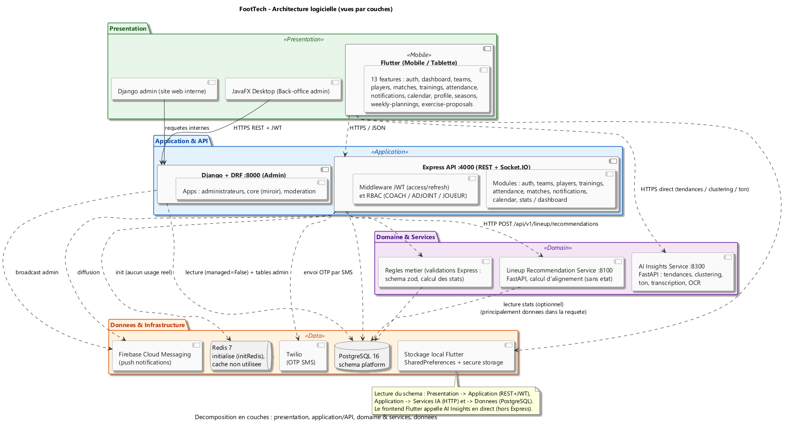
L'architecture est organisée en couches :
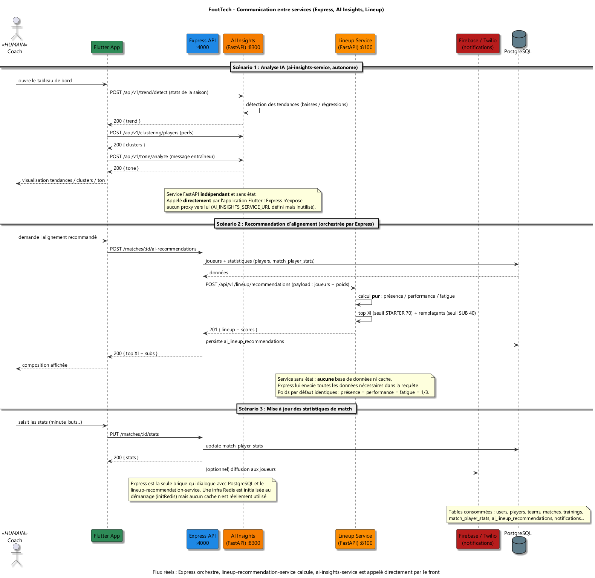
Les deux microservices IA fonctionnent selon des paradigmes différents :
Cette distinction permet à chacun des services d'évoluer indépendamment et de supporter une charge différente.
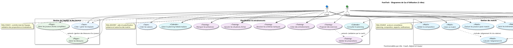
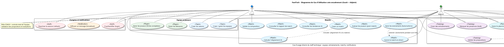
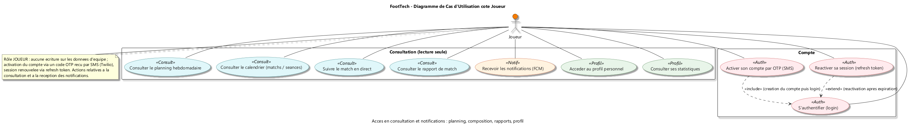
| Élément | Description |
|---|---|
| Acteurs | Coach, Adjoint, Joueur |
| Précondition | Le compte existe (COACH/ADJOINT créés par l'administrateur ; JOUEUR activé par code OTP). |
| Scénario nominal | 1. L'utilisateur saisit email + mot de passe (ou téléphone + OTP). 2. L'API valide et émet un token d'accès (30 min) + un refresh token (7 j). 3. L'application stocke les tokens en storage sécurisé. |
| Postcondition | Session ouverte ; le rôle détermine les droits d'accès. |
| Scénarios alternatifs | Identifiants invalides → 401 ; compte inactif → activation requise ; token expiré → refresh automatique. |
| Élément | Description |
|---|---|
| Acteurs | Coach, Adjoint |
| Précondition | Utilisateur connecté avec rôle COACH ou ADJOINT ; une équipe existe. |
| Scénario nominal | 1. Création d'un entraînement (POST /trainings). 2. Renseignement de la fiche (PUT /trainings/:id/sheet). 3. Relevé des présences en lot (POST /attendance/trainings/:id/bulk). 4. Ajout des situations (POST /trainings/:id/situations). 5. Schémas tactiques (POST /.../drawing). 6. Clôture de la séance. |
| Postcondition | Fiche de séance complète : présences, situations, dessins, propositions éventuelles. |
| Élément | Description |
|---|---|
| Acteurs | Coach |
| Précondition | Un match est créé ; les statistiques des joueurs sont disponibles. |
| Scénario nominal | 1. POST /matches/:id/ai-recommendations. 2. Express assemble les features (présence 10 séances, performance 5 matchs, ACWR 7j/28j). 3. Le Lineup Service calcule les scores 0-100. 4. Express persiste les scores normalisés 0-1. 5. Le coach valide/modifie (PUT /matches/:id/lineup). |
| Postcondition | Composition du match mise à jour ; recommandation archivée. |
| Scénario alternatif | Service indisponible (timeout 5 s) → 503 ; le coach garde la composition manuelle. |
| Élément | Description |
|---|---|
| Acteurs | Coach, Adjoint (consultation : Joueur) |
| Précondition | Match terminé ; alignement, événements, stats et évaluations renseignés. |
| Scénario nominal | 1. POST /matches/:id/report/generate. 2. Express agrège les données. 3. PDF généré (pdfkit) et archivé (match_reports). 4. Notification REPORT_AVAILABLE envoyée. |
| Postcondition | Rapport PDF consultable par l'encadrement et les joueurs. |
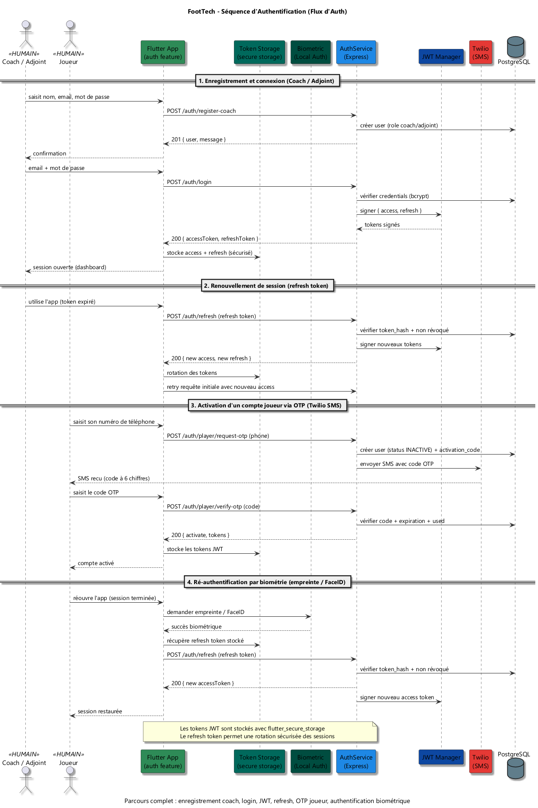
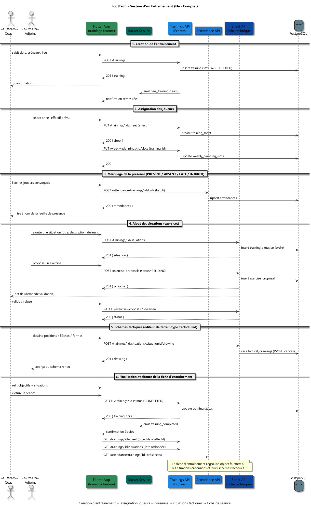
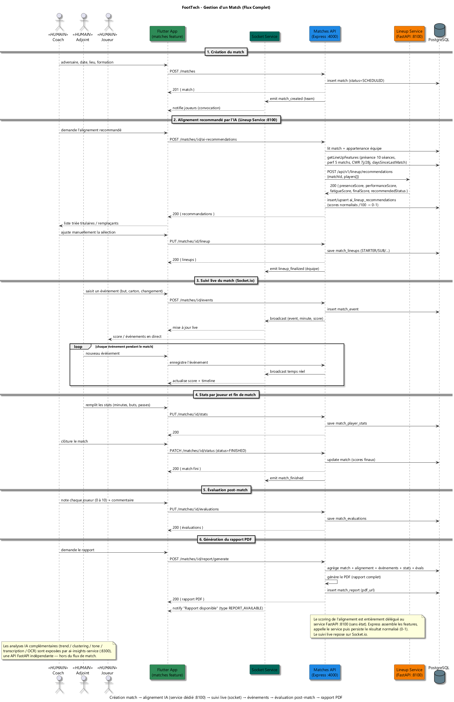
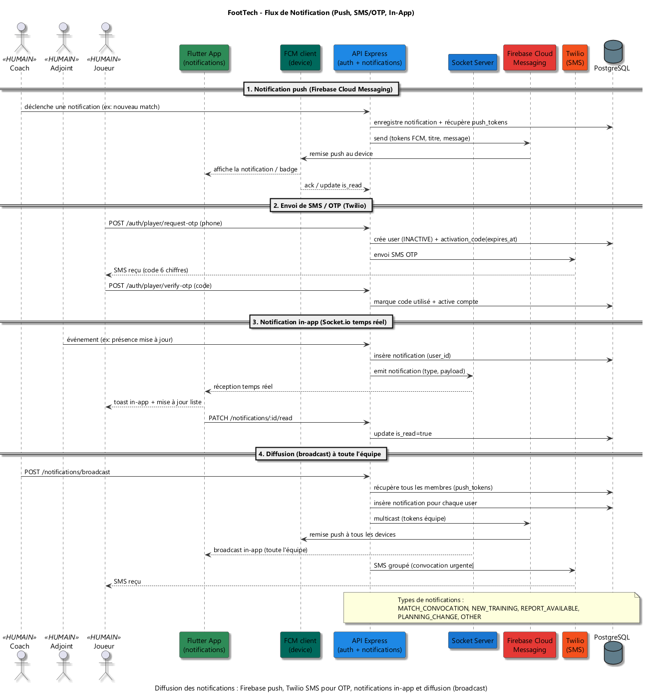
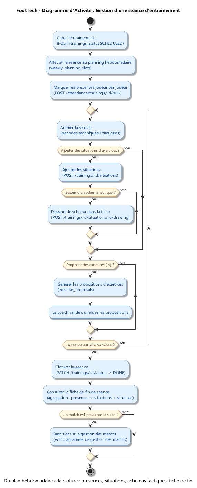
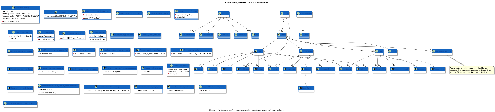
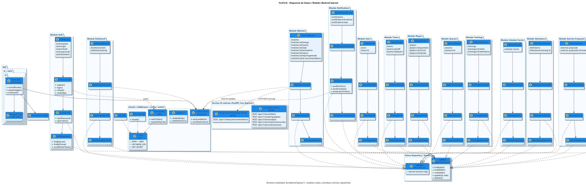
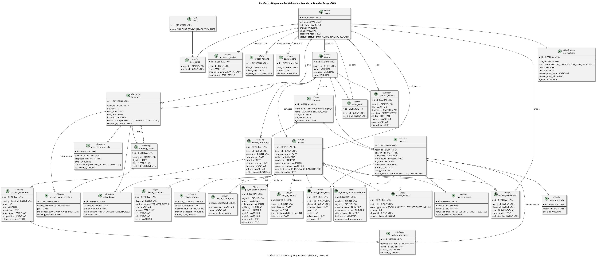
La base PostgreSQL constitue le référentiel central des données. Elle comprend 32 tables dans le schéma platform, 1 vue (player_season_bilan), 13 types enum et un trigger de mise à jour automatique de updated_at.
User
│
├── Coach
├── Assistant (Adjoint)
└── Player (1:1 avec users.id)
│
▼
Team
│
├── Season
│
├── Training ────── Attendance
│ └── Training Sheet ── Training Situation ── Tactical Drawing
│
├── Weekly Planning ── Weekly Planning Slots
│
└── Match
├── Match Lineup
├── AI Lineup Recommendations
├── Match Events
├── Player Statistics
├── Evaluations
└── Match Report (PDF)| Module | Tables | Description |
|---|---|---|
| Auth | users, roles, user_roles, activation_codes, refresh_tokens, push_tokens | Comptes, rôles, activation OTP (SMS/WhatsApp), tokens |
| Équipes | seasons, teams, team_staff | Saisons, équipes, adjoints affectés |
| Joueurs | players, player_guardians, player_address, player_school_info, player_season_profile, player_injuries | Fiches complètes des joueurs |
| Entraînements | weekly_plannings, weekly_planning_slots, trainings, training_sheets, training_situations, tactical_drawings, exercise_proposals | Planification, fiches de séance, situations, schémas, propositions |
| Présences | attendances | Présences aux entraînements (UNIQUE training+player) |
| Matchs | matches, match_lineups, ai_lineup_recommendations, match_events, match_player_stats, match_evaluations, match_reports | Cycle complet du match |
| Notifications | notifications | Notifications internes + index partiel non-lues |
| Calendrier | calendar_events | Calendrier partagé par équipe |
Cette vue reproduit directement la structure du fichier Bilan_Cadet_A.xlsx du club :
CREATE OR REPLACE VIEW player_season_bilan AS
SELECT
p.id AS player_id,
u.first_name, u.last_name,
p.poste_principal, p.poste_secondaire,
m.season_id,
COUNT(DISTINCT mps.match_id) FILTER (WHERE mps.minutes_played > 0) AS nombre_matchs_joues,
COALESCE(SUM(mps.minutes_played), 0) AS temps_de_jeu_minutes,
ROUND(AVG(me.note), 2) AS moyenne_note,
COALESCE(SUM(mps.goals), 0) AS total_buts,
COALESCE(SUM(mps.assists), 0) AS total_passes_decisives,
COALESCE(SUM(mps.goals_conceded), 0) AS total_buts_encaisses
FROM players p
INNER JOIN users u ON u.id = p.id
LEFT JOIN match_player_stats mps ON mps.player_id = p.id
LEFT JOIN matches m ON m.id = mps.match_id
LEFT JOIN match_evaluations me ON me.match_id = mps.match_id AND me.player_id = p.id
GROUP BY p.id, u.first_name, u.last_name, p.poste_principal, p.poste_secondaire, m.season_id;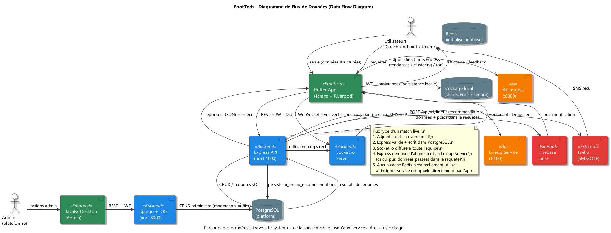
manage.py check --deploy.| Composant | Technologie | Justification |
|---|---|---|
| Application mobile | Flutter (Dart SDK ^3.12.2) | UI native iOS/Android/Web/Desktop depuis un seul code, performances élevées, écosystème riche. |
| State management | Riverpod (StateNotifier / FutureProvider) | Typé, testable ; providers par feature, injection d'API simple. |
| Routing | GoRouter | Routing déclaratif avec auth redirect et StatefulShellRoute.indexedStack. |
| Client HTTP | Dio + interceptor JWT | Gère access/refresh token (single in-flight), retries, téléversement de fichiers. |
| Temps réel | Socket.IO client | Suivi live des matchs et notifications instantanées (rooms user:ID, match:ID). |
| Stockage local | shared_preferences + flutter_secure_storage + sqflite | Préférences, tokens JWT sécurisés, cache local. |
| Push notifications | Firebase Cloud Messaging | Réception des notifications dans l'application. |
| Sécurité locale | local_auth (biométrie) | Verrouillage biométrique de l'application (BiometricLockGate). |
| i18n | ARB files (FR / EN / AR) | Internationalisation en 3 langues. |
| Back-office desktop | Java 21 + JavaFX 21.0.2 | Client de bureau autonome pour l'administrateur (Maven, Jackson, fat-jar). |
| Composant | Technologie | Justification |
|---|---|---|
| API principale | Node.js 22 / Express 5 + TypeScript 7 | Modulaire, typé, validations Zod, REST + Socket.IO intégré, ESM. |
| Authentification | JWT (access 30 min / refresh 7 j) + OTP SMS + RBAC | Sécurité des accès et rôles strictement séparés. |
| Base de données | PostgreSQL 16 (schéma platform) | Relationnel fiable, transactions, pérennité des données club. |
| Cache / file | Redis 7 | Infrastructure prête ; cache des lectures fréquentes. |
| Back-office admin | Django 5.2 + Django REST Framework | Apps administrateurs, core (miroir lecture), moderation (audit, broadcast). |
| Notifications | Firebase FCM (push) + Twilio (SMS OTP) | Diffusion mobile et activation par SMS. |
| pdfkit | Génération de rapports de match côté serveur. | |
| Documentation | Swagger (swagger-jsdoc + swagger-ui-express) | Documentation auto-générée des endpoints (/docs). |
| Service | Technologie | Rôle |
|---|---|---|
| Lineup Recommendation Service (:8100) | Python 3.12 + FastAPI | Score 0-100 : présence (10 séances), performance (5 matchs), fatigue (ACWR, Gabbett 0.8-1.3). Poids égaux (1/3). Seuils STARTER ≥ 70, SUB ≥ 40. Sans état. |
| AI Insights Service (:8300) | Python 3.12 + FastAPI (Clean Architecture) | Tendances (régression linéaire), clustering (KMeans/scikit-learn), ton (lexique FR/AR), transcription (faster-whisper), OCR (PaddleOCR). |
L'architecture retenue sépare clairement les responsabilités :
Cette séparation autorise le déploiement indépendant de chaque brique (Docker Compose) et l'évolution isolée des algorithmes IA. Elle facilite également la maintenance, les tests et le passage à l'échelle de chaque composant.
| Ressource | Détail |
|---|---|
| Machine de développement | PC / portable, OS Windows, 16 Go RAM, SSD (Docker Desktop). |
| Outils de modélisation | PlantUML (diagrammes UML/ER rendus en PNG), Mermaid (diagrammes texte). |
| Outils de développement | VS Code, Android Studio / Flutter SDK, Node.js 22, Python 3.12, Java 21. |
| Conteneurisation | Docker Compose (postgres 16, redis 7, api :4000, admin :8000, lineup :8100, ai-insights :8300). |
| Test & CI | Vitest, pytest, Postman/Newman, Playwright, Cypress, Selenium, JMeter, GitHub Actions, GitLab CI. |
Le backend constitue le cœur métier de FootTech. Il est responsable de la communication entre le frontend, la base de données, les services IA et les différents acteurs.
back/FoottechBackend-main/
├── src/
│ ├── main.ts # Bootstrap : DB, Redis, Firebase, HTTP + Socket.IO
│ ├── app.ts # Express : helmet, cors, swagger, router /api/v1
│ ├── config/ # env.ts, database.ts, swagger.ts, index.ts
│ ├── middleware/ # auth, role, validation, error, rate-limit, upload,
│ │ # resource-access, self-access, team-access, logger
│ ├── modules/ # 13 feature modules
│ │ ├── auth/ # register-coach, login, refresh, set-adjoint-password,
│ │ │ # adjoint/activate, player OTP, coach OTP, logout, me
│ │ ├── users/ # GET/PATCH /:id, POST /:id/avatar
│ │ ├── teams/ # CRUD + staff (adjoints)
│ │ ├── players/ # CRUD + guardians, address, school-info, season-profile, injuries
│ │ ├── seasons/ # CRUD
│ │ ├── weekly-plannings/# CRUD + slots
│ │ ├── trainings/ # CRUD + sheet, situations, drawings
│ │ ├── exercise-proposals/ # list/detail/review (adjoint → coach)
│ │ ├── attendance/ # history, per-training, bulk
│ │ ├── matches/ # CRUD + status, lineup, AI recos, events, stats, evaluations, report
│ │ ├── notifications/ # mine, send, broadcast, read, read-all, push-token
│ │ ├── dashboard/ # me, season-bilan
│ │ └── calendar-events/ # CRUD
│ ├── shared/
│ │ ├── clients/ # lineup.client.ts (client Zod-validated, timeout 5 s)
│ │ ├── database/ # BaseRepository (couche d'accès générique)
│ │ ├── errors/ # AppError
│ │ ├── services/ # redis, firebase, twilio, notification, report (pdfkit), team-resolver
│ │ └── utils/ # jwt, otp, bcrypt, normalizeScore
│ └── socket/ # Socket.IO : rooms user:ID et match:ID
└── resources/ # Uploads, templates PDFLe backend expose un contrat REST versionné sous /api/v1. Le client Flutter centralise les appels avec Dio, ajoute le JWT dans un intercepteur et renouvelle une seule fois le token lorsqu'il expire. Les modèles Dart traduisent les réponses JSON et les providers Riverpod propagent l'état aux écrans. Pour éviter les fuites de données entre plusieurs équipes d'un même coach, le token et le contexte sélectionné servent à résoudre l'équipe active ; les requêtes sur joueurs, saisons, entraînements, propositions, présences et matchs sont ensuite limitées à ce périmètre.
Deux choix renforcent la cohérence métier. Premièrement, les saisons et les propositions d'exercices sont explicitement rattachées à une équipe par migration SQL et contrôlées au niveau service. Deuxièmement, la saisie de présence en lot utilise une transaction : soit toutes les lignes valides sont persistées, soit aucune ne l'est. Cette approche empêche les états partiellement enregistrés dans l'interface Flutter.
| Méthode | Endpoint | Rôle / Accès |
|---|---|---|
| POST | /auth/register-coach | Création d'un compte coach |
| POST | /auth/login | Connexion (access + refresh) |
| POST | /auth/refresh | Rafraîchissement de session |
| POST | /auth/player/request-otp | Demande du code OTP joueur (SMS) |
| POST | /auth/player/verify-otp | Vérification OTP et activation |
| GET/PATCH | /users/:id | Profil utilisateur (self-access) |
| GET/POST | /teams | Liste / création d'équipe (COACH) |
| GET/POST | /teams/:id/staff | Gestion des adjoints (COACH) |
| GET/POST | /players | Liste / création de joueur (COACH/ADJOINT) |
| GET/PUT | /players/:id/guardians | Tuteurs du joueur |
| GET/POST | /seasons | Liste / création de saison (COACH) |
| POST | /trainings | Création d'un entraînement (COACH) |
| PUT | /trainings/:id/sheet | Fiche de séance |
| POST | /trainings/:id/situations | Ajout d'une situation |
| POST | /trainings/:id/situations/:sid/drawing | Schéma tactique (JSONB) |
| POST | /attendance/trainings/:id/bulk | Présences en lot (ADJOINT) |
| POST | /matches | Création d'un match (COACH) |
| POST | /matches/:id/ai-recommendations | Recommandation IA (COACH/ADJOINT) |
| PUT | /matches/:id/lineup | Validation de la composition (COACH) |
| GET/POST | /matches/:id/events | Événements live (ADJOINT) |
| PUT | /matches/:id/stats | Statistiques du match |
| PUT | /matches/:id/evaluations | Évaluations post-match |
| POST | /matches/:id/report/generate | Génération du rapport PDF |
| POST | /notifications/broadcast | Diffusion (COACH/ADJOINT) |
| PATCH | /notifications/:id/read | Marquer comme lue |
| POST | /notifications/push-token | Enregistrer un token FCM |
| GET | /dashboard/me | Dashboard personnel |
| GET | /dashboard/season-bilan | Bilan de saison |
| GET | /calendar-events | Calendrier partagé |
| GET | /health | Health check |
L'application frontend fournit l'interface utilisée par les acteurs de la plateforme. Elle transforme les fonctionnalités backend en parcours utilisateur.
front/foottechproject/
├── lib/
│ ├── main.dart # Entry: Riverpod + GoRouter + MaterialApp.router
│ ├── core/
│ │ ├── providers/ # Global providers (auth, theme, locale)
│ │ ├── routing/ # app_router.dart (GoRouter, auth redirect, StatefulShellRoute)
│ │ ├── network/ # ApiClient (Dio + JWT interceptor), SocketService
│ │ ├── storage/ # SecureStorage (tokens), SharedPreferences
│ │ ├── database/ # sqflite (cache local)
│ │ └── localization/ # i18n (FR / EN / AR)
│ └── features/
│ ├── auth/ # login, register-coach, OTP, activate-adjoint, player-login
│ ├── dashboard/ # stats, season-bilan
│ ├── teams/ # list, detail, staff
│ ├── players/ # list, profile, new-player
│ ├── trainings/ # list, detail, create, attendance, situations, drawing
│ ├── attendance/ # bulk attendance
│ ├── matches/ # list, detail, create, live, stats, evaluations, AI, report
│ ├── calendar/ # shared calendar
│ ├── notifications/ # list
│ ├── exercise-proposals/# proposals review
│ ├── seasons/ # list, detail
│ ├── weekly-plannings/ # planning editor
│ └── profile/ # user profile
└── test/ # widget_test.dart (boot onboarding)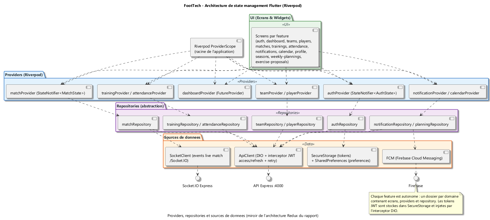
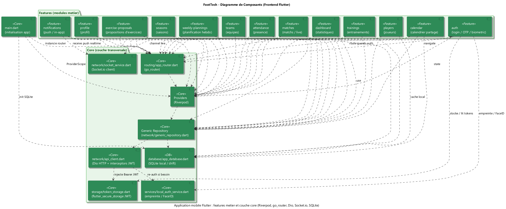
Parcours Coach :
Connexion → Dashboard → Mon équipe → Joueurs → Fiche joueur → Statistiques
→ Matchs → Composition → Recommandation IA → Analyse → Validation
→ Entraînements → Fiche de séance → Présences → Schémas tactiques
Parcours Joueur :
Connexion SMS/OTP → Dashboard → Mes stats → Calendrier → Notifications → ProfilLe système d'authentification gère trois flux distincts :
La fiche joueur constitue une entité riche du système. Elle regroupe :
Les modules players (Express) et les tables associées du schéma platform implémentent cette fiche complète inspirée des documents réels du club (fiche de renseignement joueur, planning type, fiche d'entraînement, bilan de saison).
Le système modélise une séance comme un ensemble de situations structurées :
Training
│
├── Objectifs (training_sheets.objectifs)
│
├── Situation 1
│ ├── durée (duree_travail : "2*4'")
│ ├── récupération (duree_recuperation : "1'30")
│ ├── critères de réussite (criteres_reussite : text[])
│ └── schéma tactique (tactical_drawings.canvas_data : JSONB)
│
├── Situation 2
│
└── Situation Nend_time > start_time, unicité team+date+time).Le cycle complet d'un match couvre trois phases :
match:ID et user:ID.match_reports.Le suivi des performances s'appuie sur plusieurs sources de données :
player_season_bilan.La vue reproduit la structure réelle du fichier Excel de bilan utilisé par le club : nombre de matchs joués, temps de jeu, note moyenne, buts, passes, buts encaissés.
Le service lineup-recommendation-service (:8100) constitue une composante centrale du caractère intelligent de FootTech.
lineup-recommendation-service/
├── app/
│ ├── presentation/
│ │ └── api/v1/lineup_router.py # POST /api/v1/lineup/recommendations
│ ├── application/
│ │ └── dto.py # Schémas (camelCase)
│ ├── domain/
│ │ ├── entities.py # PlayerFeatures, RecommendationResult
│ │ └── services.py # ScoringService (math pur)
│ └── infrastructure/
│ ├── weights_repository.py # Poids configurables
│ └── statsbomb/ # Calibrage offline
│ ├── client.py
│ └── vaep_calibrator.py
├── scripts/
│ └── calibrate_from_statsbomb.py # Méthodologie de calibrage
├── tests/ # 11 tests
└── k8s/ # Manifests KubernetesPresence Score = presence_rate × 100
Performance Score = recent_performance_rating × 10
Fatigue Score = f(ACWR, days_since_last_match)
├── ACWR sweet-spot : 0.8 – 1.3 (Gabbett)
└── Bonus repos : min(days/7, 1) × 20
Final Score = w_presence × presence_score
+ w_performance × performance_score
+ w_fatigue × fatigue_score (poids égaux par défaut = 1/3)
Seuils : ≥ 70 → STARTER
≥ 40 → SUBSTITUTE
< 40 → NOT_SELECTEDlineup.client.ts assemble les features pour chaque joueur (présence 10 séances, performance 5 matchs, ACWR 7j/28j, jours depuis le dernier match).ai_lineup_recommendations (UNIQUE match+player).Le script calibrate_from_statsbomb.py utilise les données ouvertes StatsBomb et la méthodologie VAEP pour calibrer les poids des composantes. C'est un outil méthodologique : la calibration sert de référence, elle ne prédit pas les performances des joueurs.
Le service ai-insights-service (:8300) regroupe cinq fonctionnalités d'analyse autonome :
ai-insights-service/
├── app/
│ ├── presentation/
│ │ └── main.py # 5 routers : trend, clustering, tone, transcription, documents
│ ├── application/
│ │ ├── dto.py # DTOs d'entrée/sortie
│ │ └── use_cases/ # detect_trend, cluster_players, analyze_tone,
│ │ # transcribe_audio, extract_document
│ ├── domain/
│ │ ├── trend/ # régression linéaire
│ │ ├── clustering/ # KMeans
│ │ ├── tone/ # lexique FR/AR
│ │ ├── transcription/ # faster-whisper
│ │ └── document_ocr/ # PaddleOCR
│ └── infrastructure/
│ ├── sklearn_kmeans_repository # scikit-learn
│ ├── paddleocr_client # PaddleOCR (optionnel)
│ ├── whisper_client # faster-whisper (optionnel)
│ └── field_extractor # extraction de champs
└── tests/ # 27 testsPOST /api/v1/trend/detect — Régression linéaire (moindres carrés) sur une série de points. Retourne la direction (PROGRESSING / STABLE / DECLINING), la pente par mois et le R². Minimum 3 points requis (sinon 422).
POST /api/v1/clustering/players — KMeans (scikit-learn) sur les caractéristiques des joueurs (buts/match, passes/match, minutes, taille, poids) avec standardisation automatique. Retourne les assignments, la distance au centroïde et l'inertie. Minimum 4 joueurs requis (sinon 422).
POST /api/v1/tone/analyze — Analyse d'un commentaire d'évaluation (FR/AR) basée sur un lexique. Classifie : TOO_HARSH / TOO_GENERIC / EMPTY / OK. Fonctionnalité RGPD-mindful (les joueurs sont des mineurs), retourne une suggestion d'amélioration.
POST /api/v1/transcription/transcribe — faster-whisper transforme une observation vocale (multipart audio) en texte : texte, langue détectée, confiance, durée. Module lourd optionnel (503 si modèle non chargé).
POST /api/v1/documents/extract — PaddleOCR extrait le texte d'un document image, identifie le type (certificat médical, fiche scolaire, fiche tuteur) et extrait les champs clés. Les fichiers temporaires sont supprimés automatiquement. Module optionnel (503 si non chargé).
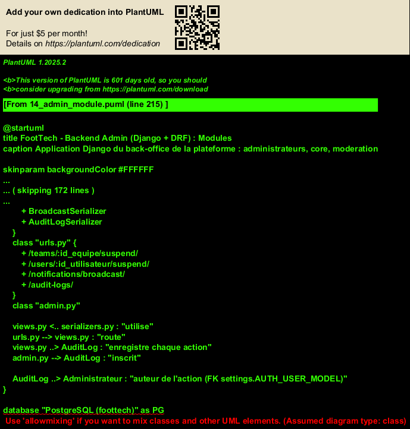
L'architecture est séparée du backend principal Express. Elle comprend trois applications :
managed=False, db_table="platform.*") : users, teams, players, trainings, matches, notifications, etc.platform.notifications).Endpoints principaux du back-office :
POST /api/admin/auth/login/ — Connexion admin.GET /api/admin/dashboard/ — KPIs (équipes, utilisateurs par rôle, joueurs en attente d'activation, matchs du mois, entraînements à venir).GET /teams/, GET /teams/:id/, GET /teams/:id/players/ — Supervision lecture seule.POST /teams/:id/suspend/, POST /teams/:id/activate/ — Modération.GET /users/, POST /users/:id/suspend/, POST /users/:id/activate/ — Modération utilisateurs.POST /broadcast/ — Diffusion globale.GET /audit-logs/ — Journal d'audit.foottech_admin_desktop/
├── pom.xml # Maven, JavaFX 21.0.2, Jackson, fat-jar (shade)
├── src/main/java/com/foottech/admin/
│ ├── controller/ # Login, Main, Dashboard, Teams, Users, Broadcast, AuditLog
│ ├── model/ # POJOs (miroir des sérialiseurs Django)
│ ├── network/ # ApiClient (HTTP + JWT refresh), TokenStore
│ ├── service/ # Auth, Dashboard, Teams, Users, Broadcast, AuditLog
│ └── config/, util/
└── src/main/resources/
├── fxml/ # Écrans FXML
└── css/style.css # Style Navy/GreenFonctionnalités : écran de connexion avec splash, dashboard (cartes KPI), liste/recherche/filtre des équipes et utilisateurs, suspension/réactivation, broadcast, visionneuse de logs d'audit. Tokens stockés via java.util.prefs, refresh automatique, tout le réseau en threads d'arrière-plan, mapping Jackson snake_case.
push_tokens).notifications avec index partiel sur les non-lues (WHERE is_read = FALSE).user:ID pour la livraison instantanée dans l'application.calendar_events).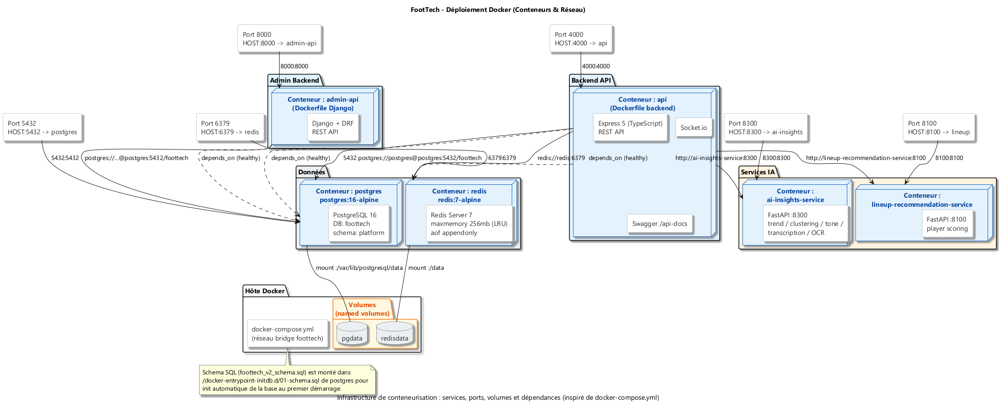
Le docker-compose.yml orchestre 6 services :
| Service | Image | Port | Dépendances |
|---|---|---|---|
| postgres | postgres:16 | 5432 | — |
| redis | redis:7 | 6379 | — |
| api | Express (Dockerfile) | 4000 | postgres, redis |
| admin-api | Django (Dockerfile) | 8000 | postgres |
| ai-insights | FastAPI (Dockerfile) | 8300 | — |
| lineup | FastAPI (Dockerfile) | 8100 | — |
Les 6 services démarrent et passent les health checks (docker compose up : 6/6 Up + healthy).
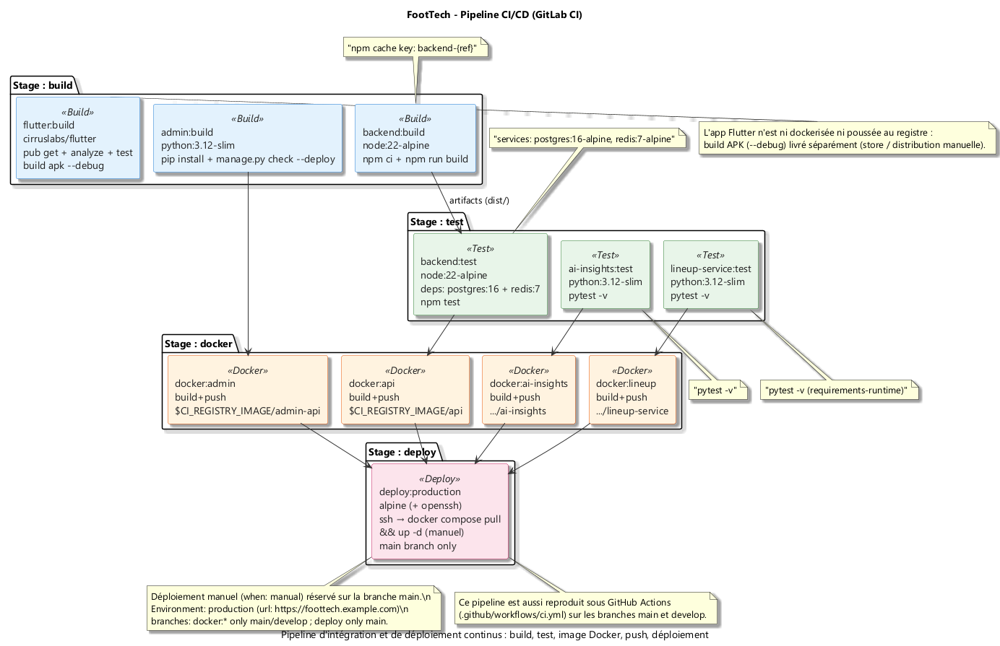
Deux pipelines équivalents sont maintenus :
.github/workflows/ci.yml) : build sur push à main/develop et PR vers main. Étapes : backend (npm ci → build → vitest), admin (manage.py check --deploy), flutter (analyze → test → build apk), IA (pytest), puis étapes d'intégration et de push des images (GHCR)..gitlab-ci.yml) : stages build → test → docker → deploy avec un job manuel de déploiement en production (SSH + docker compose).Par composant :
npm ci → npm run build → vitest run → Docker build.manage.py check --deploy → Docker build.flutter pub get → flutter analyze → flutter test → flutter build apk --debug.docker compose up -d --build, health checks sur 4000/8300/8100, run Newman, teardown.La validation s'appuie sur plusieurs niveaux complémentaires, réunis dans le dossier tests/ :
| Niveau | Outil | Portée |
|---|---|---|
| Tests unitaires backend | Vitest 4 | 15 fichiers : auth, isolation d'équipe, dates, migrations, transaction de présence, notifications, matchs, PDF et client lineup. |
| Tests unitaires IA | pytest 8.3.3 | Services FastAPI : tendances, clustering, ton, transcription, OCR. |
| Tests de contrat API | Postman + Newman | Validation des routes, statuts, schémas de réponse (200/201/4xx/5xx). |
| Tests E2E | Playwright 1.49 | Parcours utilisateur : connexion, effectif, entraînement, match, IA. |
| Tests E2E | Cypress | Health checks, login smoke. |
| Tests E2E | Selenium | Validation des endpoints API. |
| Tests de charge | Apache JMeter | Montée en charge de l'API (10/50/100/500 threads). |
| Tests Flutter | flutter test | Widget test (boot onboarding). |
| Analyse statique | tsc build, flutter analyze, manage.py check | Détection précoce des erreurs. |
| Sécurité | npm audit, pip check et tests ciblés | Dépendances, secrets dans les logs, RBAC et cloisonnement des ressources. |
| ID | Fonctionnalité | Scénario | Résultat attendu | Résultat obtenu |
|---|---|---|---|---|
| T01 | Connexion | Email + mot de passe valides | Accès dashboard | ✓ Pass |
| T02 | Connexion | Mot de passe incorrect | Message d'erreur 401 | ✓ Pass |
| T03 | Joueur | Ajouter un joueur | Joueur créé + OTP envoyé | ✓ Pass |
| T04 | Entraînement | Créer une séance | Séance créée (SCHEDULED) | ✓ Pass |
| T05 | Présence | Marquer présent (bulk) | Présence enregistrée | ✓ Pass |
| T06 | Match | Créer un match | Match créé (SCHEDULED) | ✓ Pass |
| T07 | IA | Générer composition | Recommandation retournée (scores 0-1) | ✓ Pass |
| T08 | Évaluation | Noter un joueur | Évaluation enregistrée (0-10) | ✓ Pass |
| T09 | Notification | Envoyer notification broadcast | Notification reçue (push + DB) | ✓ Pass |
| T10 | Administration | Suspendre une équipe | Équipe suspendue + log d'audit | ✓ Pass |
La collection Postman (tests/postman/foottech_collection.json, 15 dossiers) couvre : auth, teams, players, seasons, trainings, attendance, matches (CRUD, lineup, AI, events, stats, evaluations, report), notifications, dashboard, calendar et AI Insights. Les corps de requêtes IA ont été alignés sur le contrat OpenAPI. La collection est exécutable via npx newman run.
Le contrat tests/openapi/foottech_api.yaml contient 50 chemins et 44 schémas. Le validateur local ne signale aucune référence manquante ni identifiant d'opération dupliqué. Les scénarios d'intégration Docker valident notamment les statuts 200, 400/422, 403 et 503 sur la chaîne Express–Lineup.
65/65 tests passent dans 15 fichiers de test. La commande a été exécutée sur le dépôt courant après les dernières corrections.
6/6 scénarios passent sur l'environnement d'intégration Docker réel.
flutter analyze sans erreur.Le fichier tests/jmeter/foottech_load_test.jmx contient 8 scénarios : health, login, teams, players, matches, dashboard, recommandation IA via Express, appel Lineup direct. Paramétrage par -Jthreads (10/50/100/500), extraction du JWT et du matchId, assertions 200.
Interprétation : le plan de charge est prêt pour une campagne reproductible, mais le mémoire ne présente pas de chiffres de performance non mesurés sur une infrastructure de référence. Les seuils de latence, le débit et le taux d'erreur devront être formalisés lors d'un pilote terrain.
manage.py check --deploy passe proprement (exit 0).| Campagne | Cas exécutés | Résultat |
|---|---|---|
| Backend unit (Vitest) | 65 | 65/65 PASS |
| AI Insights (pytest) | 27 | 27/27 PASS |
| Lineup Service (pytest) | 11 | 11/11 PASS |
| Django admin | 2 + check | 2/2 PASS, check propre |
| JavaFX (Maven) | 2 | 2/2 PASS |
| Playwright E2E | 6 | 6/6 PASS |
| Selenium API | 7 | 7/7 PASS |
| Flutter widget test | 1 | 1/1 PASS + analyse propre |
| Docker Compose E2E | 6 services | 6/6 Up + healthy |
| OpenAPI | 50 chemins / 44 schémas | Références et operationId valides |
| Audits de dépendances | npm + pip | 0 vulnérabilité npm ; pip cohérent |
La campagne confirme la cohérence technique du prototype sur les scénarios automatisés. Elle ne constitue pas encore une validation clinique, physiologique ou sportive des recommandations IA : celle-ci exige un protocole terrain, des données historiques représentatives et l'évaluation de plusieurs entraîneurs.
La réalisation de FootTech a permis de mettre en place une plateforme couvrant plusieurs aspects essentiels de la gestion d'une équipe de football :
player_season_bilan).L'intégration de services d'intelligence artificielle constitue une valeur ajoutée importante :
La séparation entre l'application destinée aux utilisateurs sportifs et la plateforme d'administration permet de répondre à des besoins différents tout en conservant une architecture structurée et maintenable.
users, teams, players, team_staff…) a nécessité la mise en cohérence du miroir Django (managed=False).push_tokens).Le benchmark n'est utile que s'il conduit à des décisions concrètes. La feuille de route suivante conserve le cœur différenciateur de FootTech tout en réduisant les écarts identifiés avec les deux références.
| Horizon | Priorité | Livrables | Critères d'acceptation |
|---|---|---|---|
| Court terme | P0 — Fiabilité terrain | Jeu de données de recette, parcours Flutter complets, tests de charge mesurés, sauvegarde/restauration, politique de secrets. | Aucun blocage P0 ; métriques de latence documentées ; restauration testée ; pilote sur une équipe. |
| Court terme | P0 — Protection des mineurs | Consentement, minimisation des données, durée de conservation, export/suppression, journal d'accès renforcé. | Registre de traitements, droits d'accès testés, procédure de suppression vérifiable. |
| Moyen terme | P1 — Tactique | Animation 2D, séquences de déplacement, export image/PDF puis vidéo. | Une séance animée et partageable en moins de cinq minutes par un coach testeur. |
| Moyen terme | P1 — Contenus | Catalogue d'exercices, filtres catégorie/durée/intensité, favoris, modération et partage. | Recherche pertinente, contenu modéré, rattachement strict à l'équipe pour les éléments privés. |
| Moyen terme | P1 — Mobilité | Cache hors ligne et synchronisation avec résolution de conflits. | Présences et événements saisis sans réseau puis synchronisés sans doublon. |
| Long terme | P2 — IA validée | Explications de score, apprentissage sur données consenties, analyse vidéo et indicateurs xG/xA. | Protocole d'évaluation, comparaison à une référence métier, décision finale toujours modifiable par le coach. |
| Long terme | P2 — Industrialisation | Observabilité, alertes, autoscaling, SLA, support et modèle économique. | Tableaux de bord techniques, objectifs de disponibilité et procédure d'incident. |
Le projet de fin d'études présenté dans ce mémoire avait pour objectif de concevoir et développer FootTech, une plateforme intelligente destinée à la gestion et à l'analyse des activités d'une équipe de football.
L'analyse des besoins a permis d'identifier les principaux acteurs du système (coach, adjoint, joueur, administrateur) ainsi que leurs besoins respectifs. À partir de ces besoins, un Product Backlog regroupant 15 épopées et 74 User Stories a été établi afin de structurer le développement.
La conception a conduit à une architecture modulaire composée d'une application cliente Flutter, d'un backend principal Express/TypeScript, d'une base de données centralisée PostgreSQL, de microservices d'intelligence artificielle (FastAPI) et d'une plateforme d'administration (Django + JavaFX).
La réalisation a permis de couvrir plusieurs processus métier : gestion des équipes et des joueurs, entraînements, présences, matchs, compositions, événements en direct, statistiques, évaluations, calendrier et notifications.
L'intégration de l'intelligence artificielle représente l'une des principales contributions du projet. Le service de recommandation permet de proposer une composition à partir de plusieurs indicateurs (présence, performance, fatigue), tandis que le service AI Insights apporte des fonctionnalités complémentaires d'analyse des tendances, de clustering, d'analyse de commentaires, de transcription et d'extraction de documents.
Au-delà de l'aspect technique, FootTech cherche surtout à fournir un outil d'aide à la décision. Les recommandations générées par le système ne remplacent pas l'expertise du coach, mais lui fournissent des informations supplémentaires susceptibles de faciliter son analyse.
Ce projet nous a ainsi permis de mettre en pratique plusieurs compétences relatives au développement logiciel, à la conception d'architectures distribuées, aux bases de données, aux API, aux applications multiplateformes et à l'intelligence artificielle.
Des améliorations restent possibles, notamment concernant l'enrichissement des données, la précision des modèles IA, le monitoring, la sécurité et l'analyse avancée des performances. Ces perspectives pourraient permettre à FootTech d'évoluer vers une solution encore plus complète d'aide à la décision sportive.
L'étude comparative a enfin clarifié le positionnement du produit : FootTech n'a pas vocation à copier TacticalPad ou MyCoachSport, mais à réunir dans une plateforme maîtrisée la gestion opérationnelle, le suivi du match et une IA explicable. Les prochaines versions devront néanmoins atteindre la qualité de création tactique observée chez TacticalPad et la maturité organisationnelle et communautaire mise en avant par MyCoachSport.
| Fichier | Diagramme | Figure |
|---|---|---|
| 01_system_architecture | Architecture globale | 1 / 14 |
| 02_backend_class_diagram | Classes du backend Express | 11 |
| 03_frontend_component_diagram | Composants frontend | 18 |
| 04_er_diagram | Modèle conceptuel de données | 12 |
| 05_auth_sequence | Séquence — authentification | 5 |
| 06_training_flow | Séquence — entraînement | 6 |
| 07_match_management | Séquence — match | 7 |
| 08_notification_flow | Séquence — notifications / OTP | 8 |
| 09_docker_deployment | Déploiement Docker | 20 |
| 10_cicd_pipeline | Pipeline CI/CD | 21 |
| 11_use_case_diagram | Cas d'utilisation global | 2 |
| 12_data_flow | Diagramme de flux de données | 13 |
| 13_microservices_communication | Communication entre microservices | 17 |
| 14_admin_module | Back-office Django | 19 |
| 15_use_case_encadrement | Cas d'utilisation encadrement | 3 |
| 16_use_case_joueur | Cas d'utilisation joueur | 4 |
| 17_activity_seance | Diagramme d'activité — séance | 9 |
| 18_class_diagram_domaine | Classes du domaine | 10 |
| 19_architecture_logicielle | Architecture logicielle en couches | 15 |
| 20_riverpod_architecture | State management Riverpod | 16 |
| Méthode | Endpoint | Rôle |
|---|---|---|
| POST | /auth/register-coach | Création d'un compte coach |
| POST | /auth/login | Connexion (access + refresh) |
| POST | /auth/refresh | Réactivation de session |
| POST | /auth/player/request-otp | Demande du code d'activation joueur (SMS) |
| POST | /auth/player/verify-otp | Vérification du code et activation |
| GET/POST | /players, /teams, /seasons | Gestion de l'effectif et des équipes |
| POST | /trainings | Création d'un entraînement |
| PUT | /trainings/:id/sheet | Fiche de séance |
| POST | /attendance/trainings/:id/bulk | Présences en lot |
| POST | /matches/:id/ai-recommendations | Alignement IA |
| PATCH | /matches/:id/status | Statut (live / terminé) |
| POST | /matches/:id/report/generate | Rapport PDF |
| POST | /notifications/broadcast | Diffusion d'un message |
| GET | /api/v1/notifications | Liste des notifications |
| POST | /api/v1/lineup/recommendations | Recommandation IA (service :8100) |
| POST | /api/v1/trend/detect | Tendance (service :8300) |
| POST | /api/v1/clustering/players | Clustering (service :8300) |
| POST | /api/v1/tone/analyze | Analyse de ton (service :8300) |
| POST | /api/v1/transcription/transcribe | Transcription (service :8300) |
| POST | /api/v1/documents/extract | Extraction OCR (service :8300) |
users, roles, user_roles, activation_codes, refresh_tokens, push_tokens, seasons, teams, team_staff, players, player_guardians, player_address, player_school_info, player_season_profile, player_injuries, weekly_plannings, weekly_planning_slots, trainings, training_sheets, training_situations, tactical_drawings, exercise_proposals, attendances, matches, match_lineups, ai_lineup_recommendations (NUMERIC(4,3) CHECK 0-1), match_events, match_player_stats, match_evaluations, match_reports, notifications, calendar_events.
Vue : player_season_bilan. Types enum : account_status, activation_channel, training_status, planning_moment, proposal_status, attendance_status, match_status, lineup_status, match_event_type, niveau_scolaire, pied_fort, guardian_relation, notification_type.
Les sources Mermaid du dossier diagrammes/mermaid/ (architecture.mmd, deploiement-cicd.mmd, ia-lineup-dataflow.mmd, ia-lineup-flow.mmd) complètent les diagrammes PlantUML en vue textuelle ; elles peuvent être rendues avec l'outil mermaid-cli.
| Dossier | Contenu |
|---|---|
| back/FoottechBackend-main | API principale Express + TypeScript |
| front/foottechproject | Application Flutter (Coach/Adjoint/Joueur) |
| foottech_admin_backend | Back-office Django + DRF |
| foottech_admin_desktop | Client desktop JavaFX |
| lineup-recommendation-service | Microservice FastAPI — recommandation d'alignement |
| ai-insights-service | Microservice FastAPI — analyses IA |
| tests | cypress, playwright, selenium, postman, jmeter, jira, openapi |
| diagrammes | Sources PlantUML + PNG rendus, sources Mermaid |
| rapport | Présent mémoire (PDF + HTML) et images |
| foottech_v2_schema.sql | Schéma complet PostgreSQL (32 tables) |
| docker-compose.yml | Orchestration des 6 services |
| .github/workflows/ci.yml | Pipeline GitHub Actions |
| .gitlab-ci.yml | Pipeline GitLab CI |